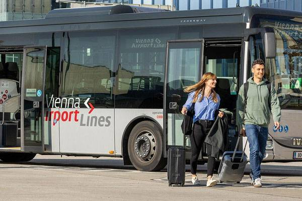

Que vous soyez de passage pour quelques jours ou installé durablement en Autriche, ce guide pratique vous accompagne pour ne manquer de rien à Vienne.
L'aéroport se situe à environ 18–20 km du centre-ville, soit 20–30 min selon l'option choisie.
File de taxis officiels devant les arrivées (plaques « TX », signe lumineux sur le toit).
Idéal avec bagages ou en groupe

Train direct sans arrêt entre l'aéroport et Wien Mitte.
Idéal pour un trajet rapide et confortable
Train régional reliant l'aéroport au centre-ville, avec plusieurs arrêts.
L'option la plus économique

Liaisons directes vers plusieurs points du centre-ville.
Pratique si votre hôtel est proche d'un arrêt
Tickets en ligne sur le WienMobil Ticketshop ou aux distributeurs des stations.
| Ticket | Tarif (2026) |
|---|---|
| Trajet simple | 3,20 € papier / 3,00 € appli |
| Pass 24h | 10,20 € |
| 7 jours numérique | 25,20 € |
| Vienna City Card (24h) | à partir de ~19 € |
Tarifs indicatifs (2026) — vérifiez sur wienerlinien.at →
⚠️ L'aéroport est hors zone centrale : un ticket de ville ne suffit pas, il faut un supplément (~2,20 €).
Achetez vos tickets, planifiez vos trajets en temps réel et réservez les vélos en libre-service.
Une sélection indicative d'hébergements répartis par budget.
Les établissements cités sont fournis à titre informatif. L'Ambassade ne recommande ni ne garantit aucun prestataire privé.
Pour retrouver les saveurs du pays — jollof rice, mafé, attiéké :
Wiener Schnitzel, Sachertorte, Apfelstrudel — et faites un tour au marché du Naschmarkt.
Les établissements cités sont fournis à titre informatif. L'Ambassade ne recommande ni ne garantit aucun prestataire privé.
Quelques sites emblématiques à découvrir lors de votre séjour.
Pharmacies (Apotheke, croix verte) ; la garde est affichée sur la porte. Pensez à votre carte européenne d'assurance maladie.
Distributeurs (Bankomat) largement disponibles, paiement sans contact très répandu. Pourboire usuel : 5 à 10 %.
Cartes SIM locales chez A1, Magenta, Drei ou HoT. WiFi public dans de nombreux lieux.
Le printemps et l'automne sont les plus agréables. L'hiver est froid (marchés de Noël), l'été chaud.
La ponctualité est très appréciée. Magasins fermés le dimanche. Tri des déchets rigoureux.
Bratislava (~1h), la vallée du Wachau, Salzbourg ou Graz sont accessibles en train via les ÖBB.
Contactez l'Ambassade ou suivez nos réseaux sociaux pour les événements de la communauté ivoirienne en Autriche.
Notre équipe reste à votre disposition avant et pendant votre séjour en Autriche.